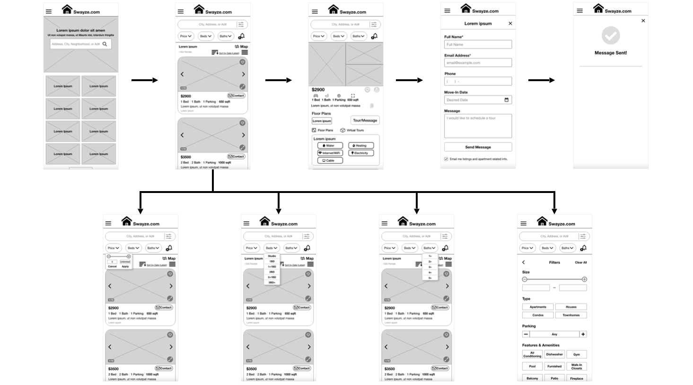

Swayze.com
UX Design | Google UX Design Course | 2023
Swayze.com is an online rental place-finding website that offers trusted market information, data, and news on rental places. The typical users include early-career professionals, working adults, and college students. The goal is to provide an easy and efficient way to search for rental places for all types of users.
THE CHALLENGE
Existing online rental search websites often have cluttered designs, inefficient systems for browsing through rental places, and a lack of important features that would make the search process easy, fast, and time-efficient.
THE APPROACH
Design the Swayze.com rental finding website to be user-friendly by providing clear navigation and an efficient searching process.

RESEARCH
User interviews and empathy maps facilitated understanding users' wants and needs.
Personas
Key Insights
IDEATION
Brainstorming through sketching and utilizing methods like crazy eights has proven instrumental in crafting diverse design solutions that effectively address user pain points.
The subsequent development of paper wireframes for the website's homepage ensured the integration of elements prioritized to enhance interaction features, improve navigation, and provide a better browsing experience, ultimately saving users time.
Paper Wireframes Screen Size Variations
PROCESS
Considering user needs, proceeded to create a sitemap to outline the structure and hierarchy of the website.
Initial Design and Digital Wireframes
Utilizing the completed set of digital wireframes, I crafted a low-fidelity prototype, focusing on the primary user flow, which involves searching for rental places and sending inquiry messages or requesting tours. I incorporated peer feedback on my designs, addressing user pain points.
View the low-fidelity prototype for Swayze.com's web version at this link
Screen Size Variations
Designing for various screen sizes helped address user pain points and enhance the user experience across devices
Low-fidelity prototype for the mobile-based version of Swayze.com
View the low-fidelity prototype for Swayze.com's mobile version at this link
High-Fidelity Mockups and Prototype
The high-fidelity prototype followed the same user flow as the low-fidelity prototype and included design changes made after the usability study, as well as other changes suggested by peers.
View the high-fidelity prototype for Swayze.com's web version here
View the high-fidelity prototype for Swayze.com's mobile version here
Accessibility Considerations
- Implemented varying text sizes within headings to ensure a clear visual hierarchy
- Utilized icons and visual landmarks to help users navigate the site
GOING FORWARD
Key Learnings
While designing, it became evident that ideas and designs undergo a continuous iteration process centered on user needs. Usability studies and user research influenced each iteration, and even a small design change can have a significant impact on the user experience.
Next Steps
- Conduct follow-up usability testing
- Identify any additional areas of need and ideate on new features
- Improve accessibility considerations in the design